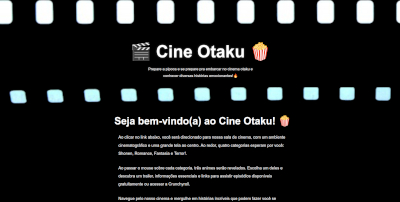
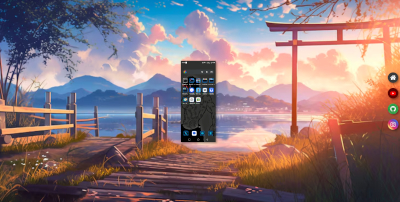
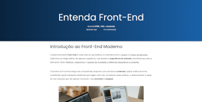
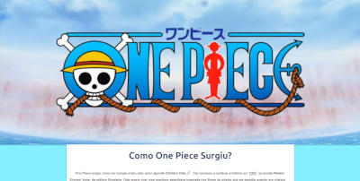
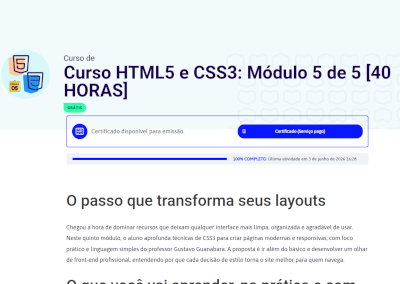
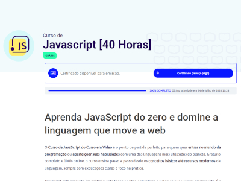
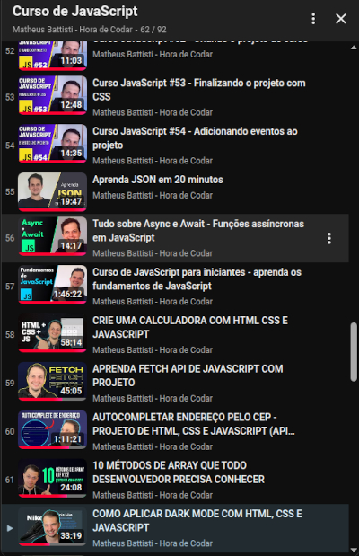

Sobre Mim
Meu nome é Vinícius Ferreira Santos, sou um dev Front-end em formação. Atualmente estudando JavaScript e criando pequenos projetos para desenvolver minha lógica e colocar em prática o que estou aprendendo. Estou sempre buscando evoluir e aprender mais para aprimorar minhas habilidades e transformar cada projeto em uma oportunidade de melhorar com o objetivo de me tornar um Dev profissional.
Me Apresentando
Projetos
Projeto Academia
Projeto feito para melhorar minhas habilidades de responsividade e adaptar projetos para diferentes tipos de telas e dispositivos.
Saiba mais...
Neste projeto, coloquei em prática tudo o que aprendi em HTML e CSS, com foco principalmente em responsividade e flexibilidade, buscando proporcionar uma melhor experiência ao usuário.
Projeto Login Gamer
Projeto Cine Otaku

Projeto desenvolvido para praticar posicionamento de elementos e aprimorar minhas habilidades com CSS.
Saiba mais...
Este projeto foi desenvolvido para praticar a incorporação de sites internos utilizando iframe e aprender diferentes formas de posicionar elementos com CSS.
Meu Projeto Social

Projeto criado para praticar a utilização de iframes e a criação de links para redes sociais.
Saiba mais...
Neste projeto, tive meu primeiro contato com a incorporação de sites internos e externos utilizando iframe, além de praticar o posicionamento de elementos com CSS e a integração com minhas redes sociais.
Projeto Entenda Front-End

Projeto criado para praticar a utilização de tabelas para organizar informações.
Saiba mais...
Neste projeto, aprendi a criar uma landing page simples utilizando os conceitos básicos de HTML e CSS, com foco principalmente na criação de tabelas e na organização de conteúdos.
Projeto One Piece

Projeto criado para treinar organização de conteúdo e estilização.
Saiba mais...
Este foi o primeiro projeto que criei, com foco em aprender os fundamentos de HTML e CSS, além de praticar semântica e design.
Skills
HTML
Sei estruturar páginas HTML de forma organizada e semântica, utilizando elementos como header, main e footer.
CSS
Sei estilizar páginas web utilizando CSS, organizando seu layout de forma bonita e responsiva.
JavaScript
Sei programar algumas interações em JavaScript, mas ainda estou aprimorando as minhas habilidades para criar programas cada vez mais profissionais.
GitHub
Sei utilizar o GitHub para armazenar e compartilhar meus projetos com outras pessoas.
VS Code
Sei utilizar o VS Code para escrever meus códigos de forma eficiente, aproveitando suas extensões e recursos.
IA
Sei utilizar ferramentas de IA, como o ChatGPT, para me auxiliar no aprendizado, na resolução de problemas de programação e na geração de conteúdo.
Cursos
HTML5-CSS3 Guanabara

Curso de HTML5 e CSS3 do Gustavo Guanabara do Curso Em Vídeo
Saiba Mais...
Concluí os 5 módulos dos cursos de HTML5 e CSS3 do Gustavo Guanabara. Neles, aprendi desde os fundamentos até conceitos mais avançados de HTML e CSS, passando por semântica, estilização e desenvolvimento de sites responsivos.
JavaScript Guanabara

Curso de JavaScript do Gustavo Guanabara do Curso Em Vídeo
Saiba Mais...
Neste curso de JavaScript, dei meus primeiros passos na linguagem com o Gustavo Guanabara, aprendendo conceitos como lógica de programação, manipulação de elementos e funções.
JavaScript Battisti

Curso de JavaScript do Matheus Battisti do Hora de Codar
Saiba Mais...
Ainda não finalizei o curso de JavaScript do Matheus Battisti, porém, já aprendi conceitos mais avançados, como JSON, Fetch API e Promises.